700 patients. Four radiologists. Tiny targets.
LIDC-IDRI chest CT, from the NCI Imaging Data Commons. Up to four radiologists outlined every nodule of 3 mm or more. Our mask is their 50% consensus.
Scans are windowed to the lung range (−1000 to 400 HU) and saved as 512×512 slices. We keep every slice with a nodule, plus an equal number of nodule-free slices, so the model learns to stay silent on healthy lungs. The split is by patient, so no person appears in two sets.
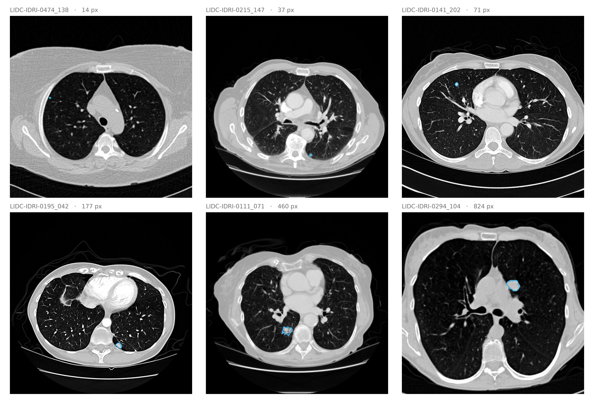
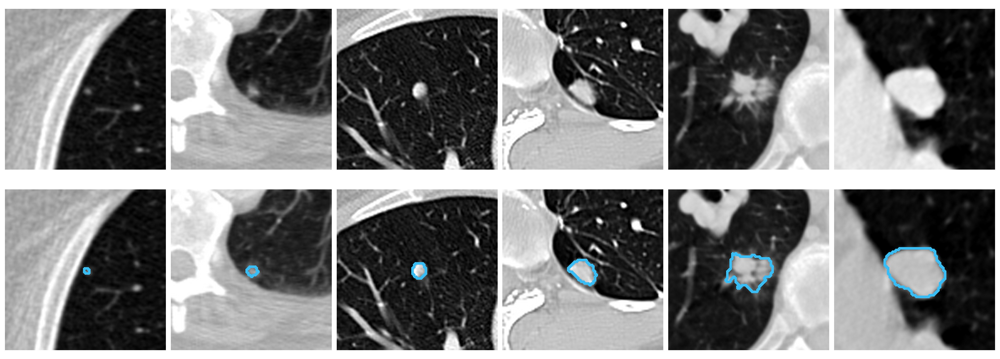
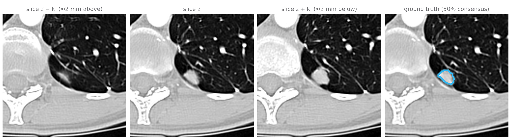
| Split | Patients | Slices | With nodule | Without nodule |
|---|---|---|---|---|
| Train | 490 | 12,268 | 6,101 | 6,167 |
| Validation | 105 | 3,536 | 1,763 | 1,773 |
| Test | 105 | 2,558 | 1,274 | 1,284 |
| Total | 700 | 18,362 | 9,138 | 9,224 |
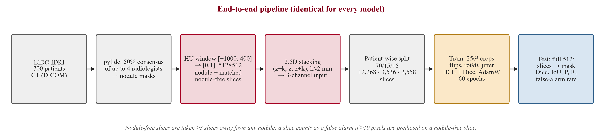
Attention where it's cheap. Mamba where context matters.
A convolutional stem keeps fine edges. Two Swin stages use 8×8 window self-attention at high resolution. Two Mamba (VSS) stages scan the whole image in four directions at low resolution, with cost that grows only linearly. A convolutional decoder with skip connections restores the full-size mask.
The selective scan is written in plain PyTorch with a chunked, clamped recurrence, so no custom CUDA kernel is needed. The first version overflowed to NaN; the clamp fixed it.
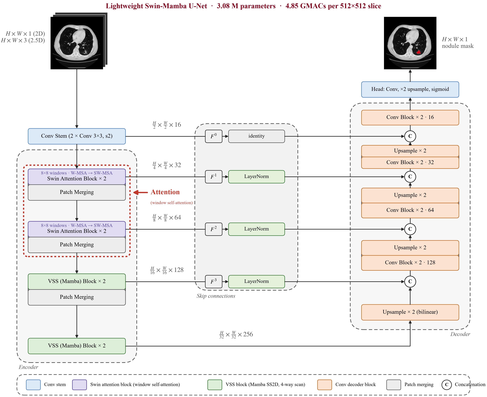
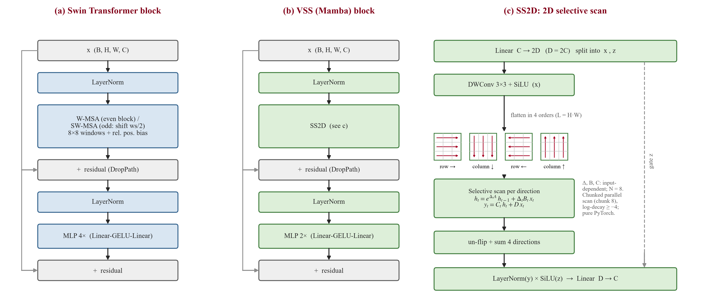
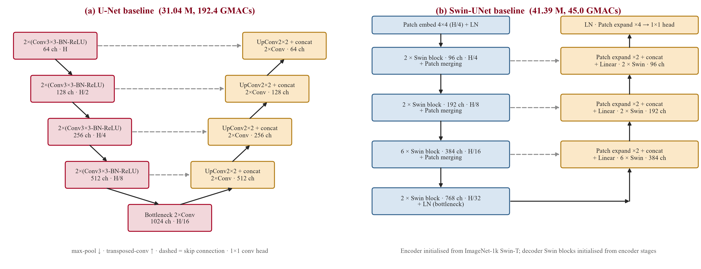
One laptop GPU. Same recipe for every model.
BCE plus Dice loss, AdamW at 5×10⁻⁴ with warm-up and cosine decay, 60 epochs, bf16 mixed precision and gradient clipping. Training uses 256×256 crops (80% centred near a nodule); testing uses full 512×512 slices. The best checkpoint is picked on validation only.
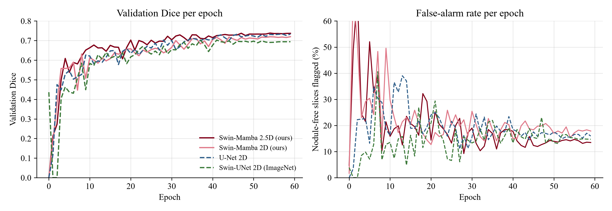
| Model | Best val Dice | Epoch | Train time |
|---|---|---|---|
| Swin-Mamba 2.5D (ours) | 0.738 | 54 | 11.7 h |
| Swin-Mamba 2D (ours) | 0.720 | 59 | 12.4 h |
| U-Net 2D | 0.734 | 57 | 7.3 h |
| Swin-UNet 2D | 0.703 | 41 | 6.1 h |
Best of four on full slices.
Test set: 105 unseen patients, 2,558 full slices, of which 1,284 contain no nodule. Any prediction of 10 or more pixels on an empty slice counts as a false alarm.
| Model | Params | Dice | IoU | Precision | Recall | False alarms |
|---|---|---|---|---|---|---|
| Swin-Mamba 2.5D + flip-averaging (final) | 3.08 M | 0.723 | 0.566 | 0.791 | 0.665 | 6.9% |
| Swin-Mamba 2.5D (raw) | 3.08 M | 0.708 | 0.548 | 0.744 | 0.676 | 12.1% |
| Swin-Mamba 2D | 3.08 M | 0.669 | 0.503 | 0.727 | 0.620 | 16.0% |
| U-Net 2D | 31.04 M | 0.696 | 0.533 | 0.745 | 0.652 | 14.4% |
| Swin-UNet 2D | 41.39 M | 0.670 | 0.504 | 0.715 | 0.631 | 18.2% |
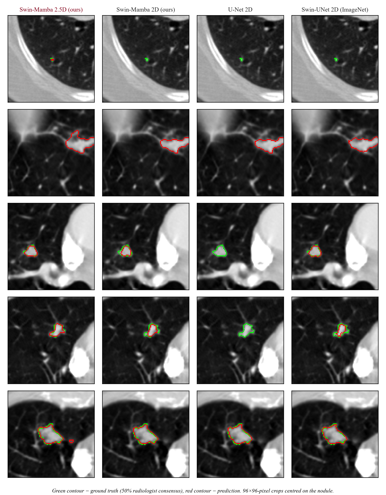
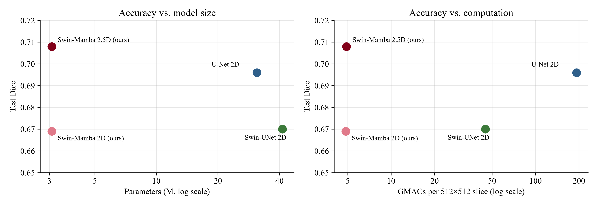
Inference pipeline
The same trained model, with settings tuned on validation only and the test set run once. Flip-averaging (TTA) and removing blobs under 20 px raised Dice to 0.723 and cut false alarms from 12.1% to 6.9%. Fine-tuning, a 2D + 2.5D ensemble and a retrained crop refiner improved validation (up to 0.772) but not test (0.717–0.721), so they were not adopted.
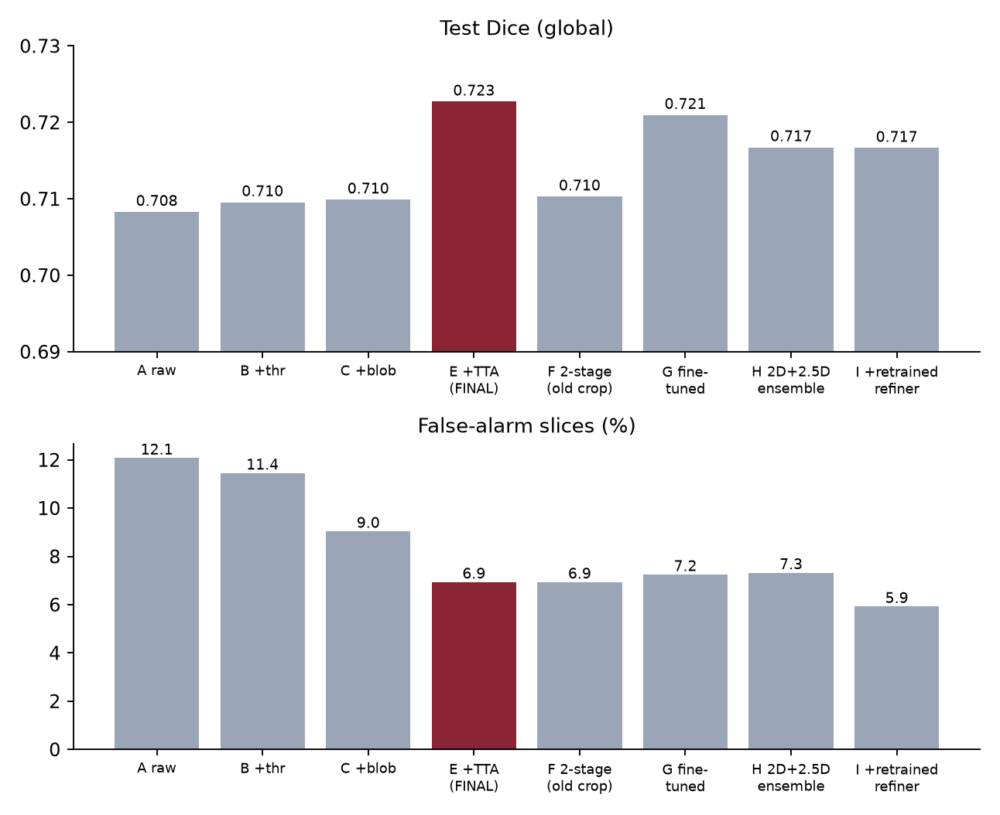
Detection sensitivity
Share of nodule regions that any prediction touches, per slice, across 1,379 regions. The final pipeline buys Dice and fewer false alarms by dropping tiny nodules.
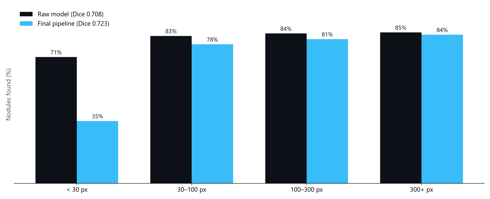
For reference: the crop protocol
Most LIDC papers test on 128×128 patches centred on a known nodule. That tells the model where to look, so the task is easier and scores are higher. Under that protocol the same model scores 0.818 (U-Net 0.828, pre-trained Swin-UNet 0.854) at about 40× less compute.
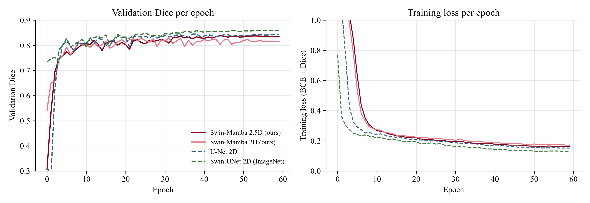
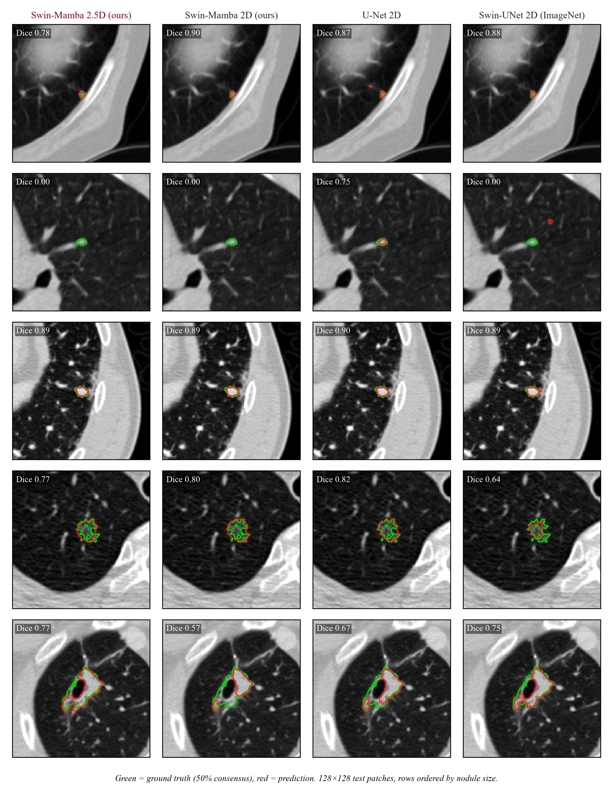
What the numbers actually say.
Same model, two protocols, 10 points apart. It scores 0.82 when told where the nodule is and 0.72 when it must search the whole slice. Reported LIDC scores of 0.89–0.93 come from the easier setting.
The full-scan state of the art is about 0.72. The best LNDb 2020 challenge entry scored Jaccard 0.567, which is about 0.72 Dice, on a different dataset and metric.
Dice hides missed tiny nodules. Tuning for Dice halved tiny-nodule detection. Sensitivity must be reported alongside it.
2.5D context is the largest single gain: +3.9 Dice and 4 points fewer false alarms, for 288 extra parameters.
Limits. One split and one seed per model. The baselines did not get 2.5D input. Sensitivity is counted per slice, not per 3D nodule. No external test yet. Lower GMACs have not yet turned into faster GPU speed. Every one of these is addressed in the next steps.
In plain English.
- Dice
- How well our outline matches the radiologists'. 0 is no overlap, 1 is perfect.
- Detection sensitivity
- Of 100 real nodules, how many we found at all.
- False alarm
- A nodule marked where there isn't one.
- Crop vs full slice
- A small box around a known nodule (easy), or the whole lung to search (real life).
- 2D, 2.5D, 3D
- One slice, three slices, or the whole stack.
- Cascade
- Find first, then zoom in and draw.
- Cross-validation
- Each patient group takes a turn as the test set, so the score isn't luck.
- Ablation
- Remove one part to prove it matters.